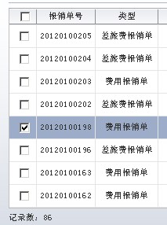

有时候需要在初始化时执行一些查询，但发现会多次执行。需要在构造方法里添加一行代码避免页面点击时多次执行初始化。
if (!(Boolean)ADFUtils.getBindObject(“adfFacesContext.postback”)) {
init()；
}
通过页面是否postback来控制只初始化一次。
有时候需要在初始化时执行一些查询，但发现会多次执行。需要在构造方法里添加一行代码避免页面点击时多次执行初始化。
if (!(Boolean)ADFUtils.getBindObject(“adfFacesContext.postback”)) {
init()；
}
通过页面是否postback来控制只初始化一次。
有个需求是要求程序在每天晚上3点钟的时候自动调用一个Job执行。
解决方案：定制weblogic的启动类，用来运行Job执行。
STEP1，启动类StartupTask：
public class StartupTask implements T3StartupDef {
public String startup(String name, Hashtable args) throws Exception {
Callplsql.main(null);
return “Callplsql Startup successful completed”;
}
public void setServices(T3ServicesDef t3ServicesDef) {
}
} Callplsql.java( 即是JOB类，是需要被调用的，要继承TimerTask ）中的Main方法要有：
public static void main(String[] args) {
//任务执行间隔时间，默认24小时
long PERIOD_TIME=24*60*60*1000;
long delay=0;
//任务首次启动时间，默认零晨3点
Calendar end=Calendar.getInstance();
end.set(Calendar.HOUR_OF_DAY, 3);
end.set(Calendar.MINUTE, 0);
end.set(Calendar.SECOND, 0);
Calendar now=Calendar.getInstance();
delay=end.getTime().getTime()-now.getTime().getTime();
if(delay<=0){
delay=PERIOD_TIME+delay;
} System.out.println(“当前时间：”+now.getTime());
System.out.println(“首次启动SAP同步程序时间：”+end.getTime());
System.out.println(“延时：”+delay+”毫秒启动SAP同步程序！”);
// 待执行的任务
Timer time=new Timer();
Callplsql task=new Callplsql();
time.schedule(task,delay,PERIOD_TIME);
} 通过time.schedule每天零晨3：00循环调用JOB。
编译好StartupTask类后，要在weblogic控制台设置好启动类即可实现此需求。
如图效果:

解决方案：
VO里新建Transient属性Checked(Boolean)

表内添加一个column如下：
1 2 3 4 5 6 7 8 9 10 | |
1 2 3 4 5 6 7 8 9 10 11 12 13 14 15 16 17 18 19 20 | |
以上即可实现此需求.
 解决方案：
解决方案：
VO里新建Transient属性Checked(Boolean),
表内添加一个column如下：
<af:column id=”c10” headerText=”选择” width=”30” align=”center” noWrap=”true”>
<f:facet name=”header”>
<af:selectBooleanCheckbox valueChangeListener=”#{backingBean.selectAll}”
autoSubmit=”true” id=”selectAll”
label=”” value=”“/>
</f:facet>
<af:selectBooleanCheckbox label=”选中/非选中” id=”sbc1” autoSubmit=”true” immediate=”true”
value=”#{row.bindings.Checked.inputValue}”/>
</af:column>
public void selectAll(ValueChangeEvent valueChangeEvent) {
DCIteratorBinding it = ADFUtils.findIterator(REIM_HEADER_ITER);
ViewObject vo = it.getViewObject();
if (valueChangeEvent.getNewValue() != null) {
Boolean selectAll =
Boolean.parseBoolean(valueChangeEvent.getNewValue().toString());
if (!selectAll) {
for (Row temp : vo.getAllRowsInRange()) {
temp.setAttribute(“Checked”, false);
}
} else {
for (Row temp : vo.getAllRowsInRange()) {
temp.setAttribute(“Checked”, true);
}
}
RichTable table = (RichTable)JSFUtils.findComponentInRoot(“t1”);
AdfFacesContext.getCurrentInstance().addPartialTarget(table);
}
}
以上即可实现此需求。
运行AM的时候报个JDBC连接错误，ORA-280000:用户被锁的异常。
于是在PL/SQL DEV里切换成SYSTEM用户 alter user XXX account unlock;之后，用PL/SQL DEV测试 可以连上了
再运行AM的时候，又报了个用户被锁。很是蛋疼
于是换到命令行，尝试以SYSDBA的身份再执行一次alter account unlock;
发现连不上：报了以下错误：
ORA-28056: Writing audit records to Windows Event Log failed
这你妹的，原来是系统日志满了，解决方案：
打开windows 事件查看器，将应用程序日志清理一下，重新连接数据库，连接成功。
设置按钮的immediate=”true” 可以避免因按钮提交FORM导致的页面刷新闪烁，但也会带来麻烦。
假如对表的取消按钮设置了此属性，可能会发生新增数据，然后点取消作rollback时数据显示异常。
开发时值得注意
需求：项目中的树菜单需要权限用户的权限过滤显示子菜单，通过用户所在的用户组可以查看的页面ID（List)过滤子节点
解决方案：
因为树是通过viewLink关联自身的VO生成的，想在AM里添加方法，对VO进行过滤处理把结果返回。
但实现起来比较麻烦，调用方法之后要刷新页面，初始化的树数据过滤处理困难。
于是想重写VO的方法看能不能在VO层就过滤掉子节点。重写createViewLinkAccessorRS，此方法返回ViewLink的结果，也就是菜单的子节点数据
@Override
protected ViewRowSetImpl createViewLinkAccessorRS(AssociationDefImpl associationDefImpl,
ViewObjectImpl viewObjectImpl,
Row row,
Object[] object) {
ViewRowSetImpl viewRowSetImpl =
super.createViewLinkAccessorRS(associationDefImpl, viewObjectImpl,
row, object);
int count = 0;
// getList()拿到可以查看的pageId的列表，对比Row中的pageId属性，如果在List中存在，就取该Row，如果不存 //在，表示此子节点不予以显示，remove掉
if (this.getList() != null && this.getList().size() != 0 &&
viewRowSetImpl != null) {
for (int m = 0; m < viewRowSetImpl.getRowCount(); m++) {
if (viewRowSetImpl.getRow(m).getAttribute(“pageId”) ==
null) {
continue;
} for (int i = 0; i < this.getList().size(); i++) {
if (this.getList().get(i).equals(viewRowSetImpl.getRow(m).getAttribute(“pageId”))) {
count++;
} }
if (count == 0) {
viewRowSetImpl.removeRowAt(m);
//因为remove掉一行之后，viewRowSetImpl的RowCount就少了1，需要给m也减一，不然可漏掉一行数据未处理。
m–;
} count = 0;
} }
return viewRowSetImpl;
}
如此重写了这个方法之后，在调用的时候需要给List赋值，以方便过滤。因此需要给List的 SetList()方法生成Client接口。
在VO中为setList()添加clientInterface.
<ClientInterface>
<Method
Name=”setList”>
<Return
Type=”void”/>
<Parameter
Name=”list”
Type=”java.util.ArrayList”
IsGeneric=”true”>
<Element
Type=”java.lang.String”/>
</Parameter>
</Method>
</ClientInterface>
DCIteratorBinding it2 = ADFUtils.findIterator(“MenuVO1Iterator”);
MenuVOImpl vo2 = (MenuVOImpl)it2.getViewObject();
vo2.setList(list); //给VO的List赋值。
vo2.executeQuery();
目前LOV控件在页面初始化时默认显示的是第一条记录，如果想让LOV初始化的时候不显示记录应该如何设置呢？
方法一. 通过在BackingBean的构造函数里设置LOV的值为空字符串这种做法基本可以达到需求。但总感觉这种方法很别扭，走了弯路。
本文介绍另外一种更为简单的方法。通过EL表达式实现需求。
<af:inputListOfValues id="ilov1"
popupTitle="Search and Select: #{bindings.CodeType.hints.label}"
value="#{adfFacesContext.postback == false ? bindings.CodeType.nullValueString : bindings.CodeType.inputValue}"
label="#{bindings.CodeType.hints.label}"
model="#{bindings.CodeType.listOfValuesModel}"
required="#{bindings.CodeType.hints.mandatory}"
columns="#{bindings.CodeType.hints.displayWidth}"
shortDesc="#{bindings.CodeType.hints.tooltip}"
binding="#{backing_pages_frs001.ilov1}"
valueChangeListener="#{backing_pages_frs001.valueChange}"
>
看这段代码：
value="#{adfFacesContext.postback == false ? bindings.CodeType.nullValueString : bindings.CodeType.inputValue}"
当页面没有postback的时候，给LOV字段的值设为nullValueString，即可。
今天太困了。。。先睡了。。。不贴图了~
默认的ADF的inputDate组件是不显示时分秒的，客户的需求要精确到时分秒的显示。其实只需要一个很小的改动就可以实现这个需求。
以HR的Employee表为例
Step.1 创建Business Components from table，得到如下图所示，EO，VO等。
Step.2 双击Employees EO，

Step.3 找到日期属性HireDate,双击打开属性编辑页，作如下修改（Format Type: Simple Date; Format: yyyy-MM-dd HH:mm:ss), OK。
Step.4 切换到Source页，将HireDate属性的类型type=”oracle.jbo.domain.Date”改为下图所示的”oracle.jbo.domain.Timestamp”类型，保存即可。
Step.5 将Employees VO生成的DataControl拖到页面上生成一个ADF form，然后运行看下效果吧~

其实是很简单的吧~~~
{kind=link}
{kind=link}
{kind=link}
{kind=link}
{kind=link}
{kind=link}
{kind=link}
{kind=link}